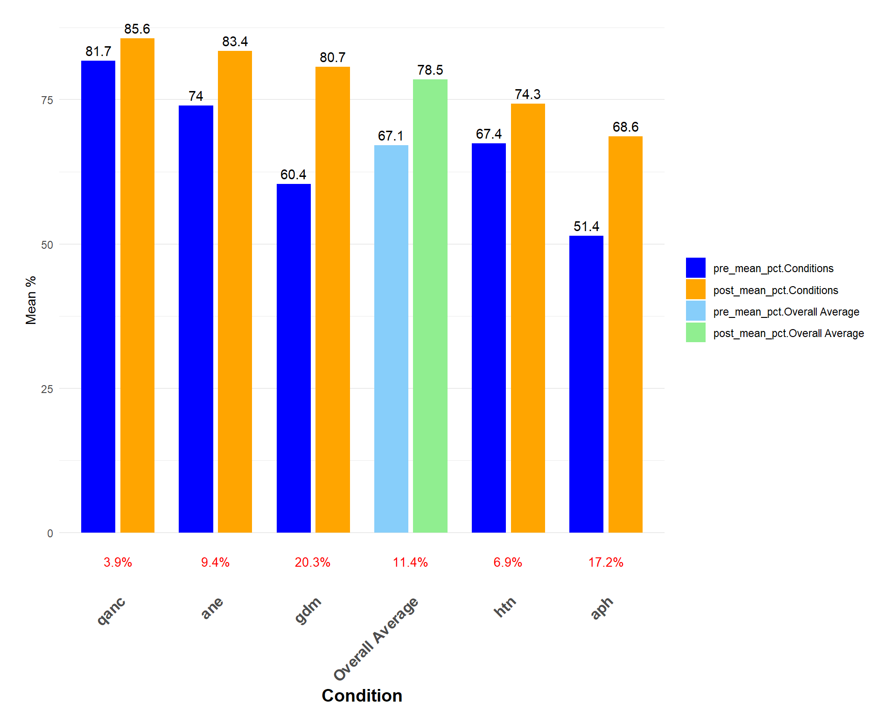
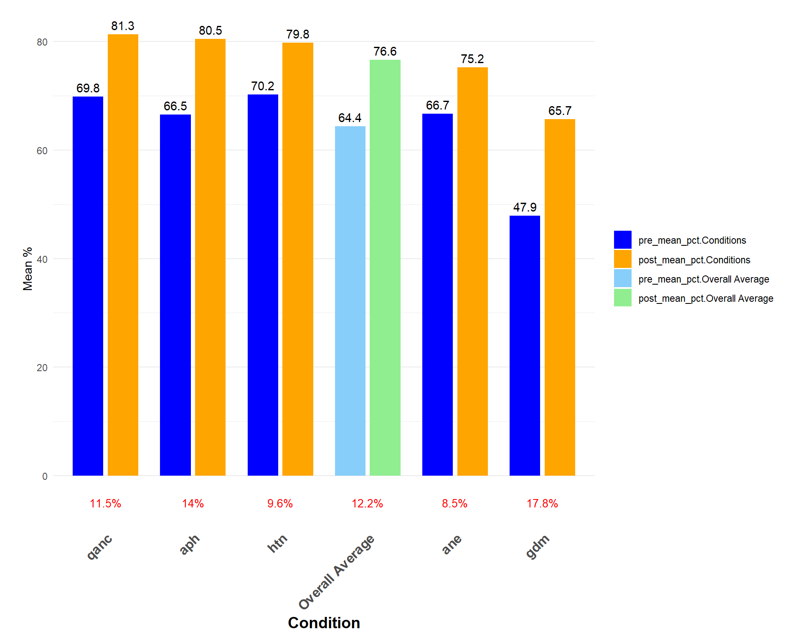
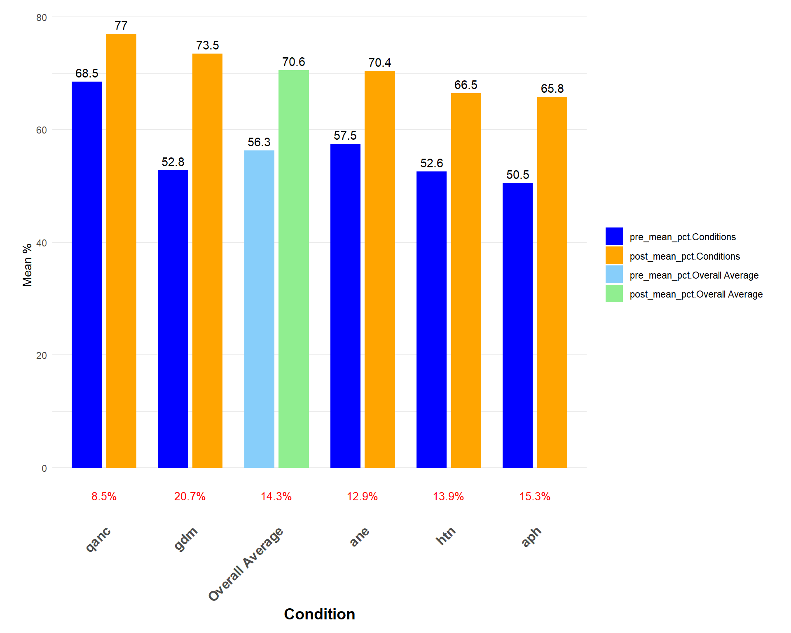
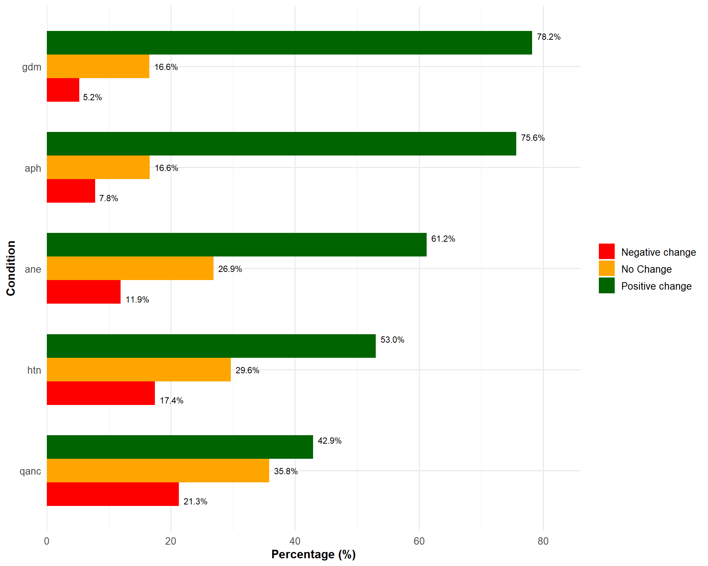
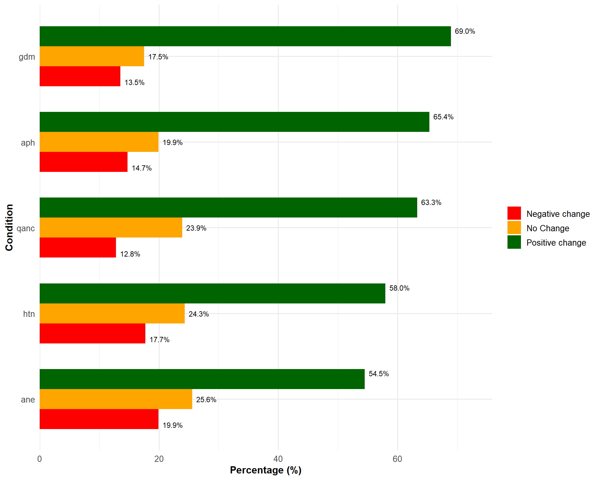
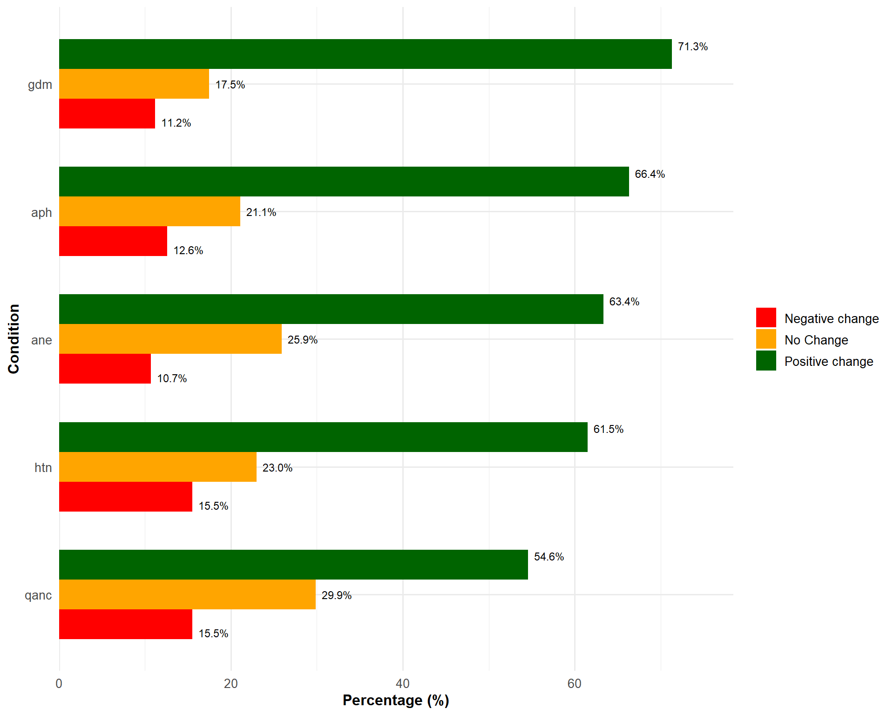
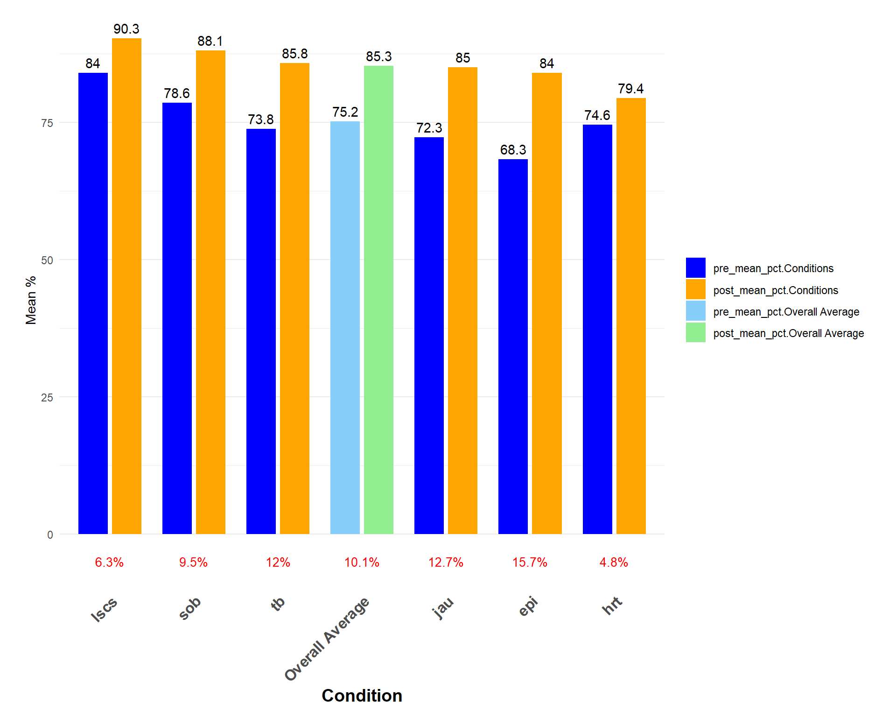
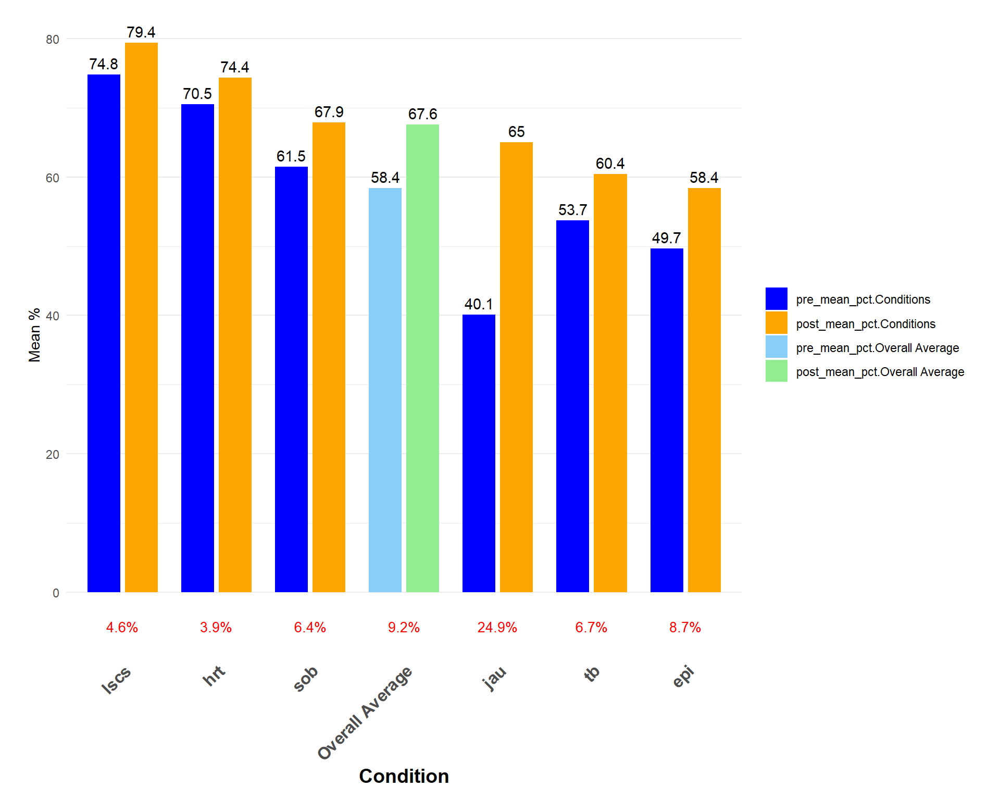
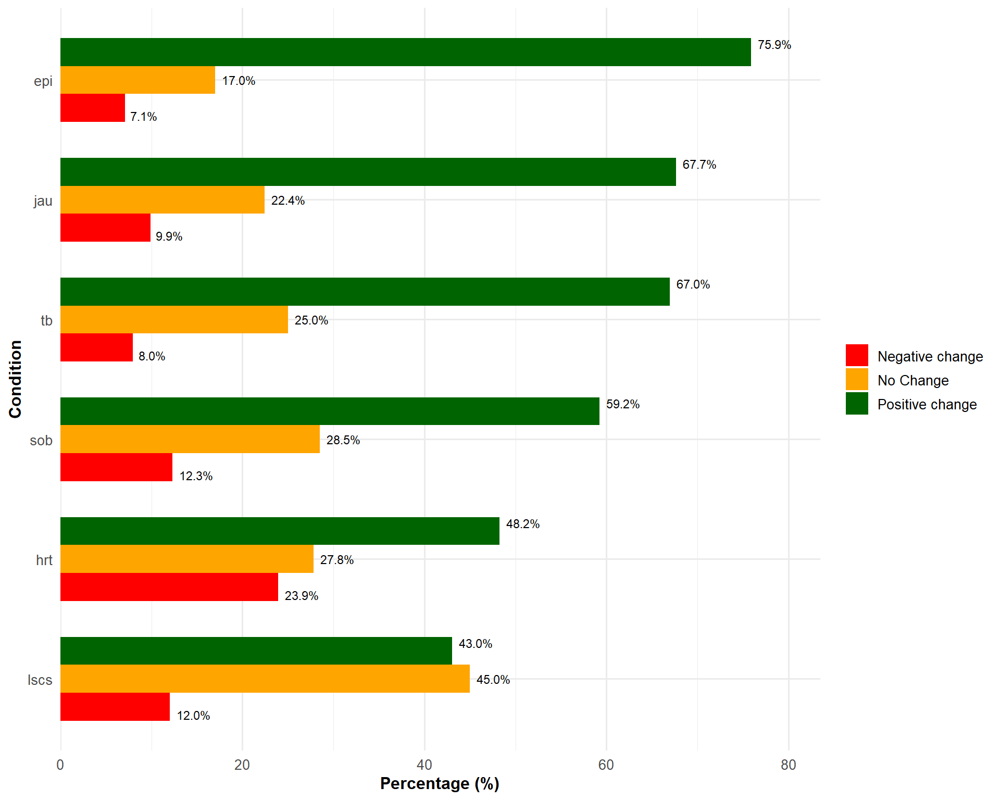
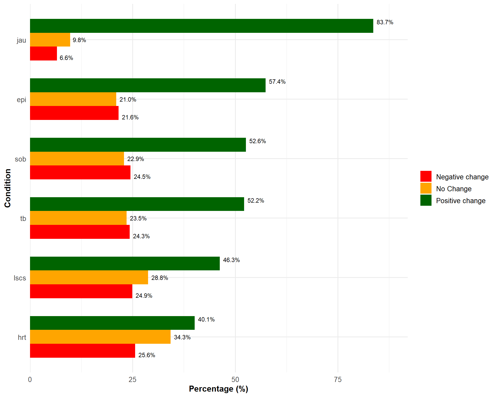

Topics
Quality ANC
Topics
Anaemia
Topics
GDM
Topics
Hypertension
Topics
APH
MO (Approx.)
620
ANM (Approx.)
6896
SN (Approx.)
425






| Question |
Pre-Post Score Percentage
|
|||||||||
|---|---|---|---|---|---|---|---|---|---|---|
| QANC Pre | QANC Post | ANE Pre | ANE Post | HTN Pre | HTN Post | GDM Pre | GDM Post | APH Pre | APH Post | |
| Q 1 | 78.1 | 84.4 | 90.7 | 98.5 | 57.3 | 65.5 | 46.2 | 67.7 | 42.6 | 75.6 |
| Q 2 | 87.4 | 76.9 | 47.6 | 52.7 | 74.7 | 85.5 | 86.2 | 95.7 | 43.4 | 64.4 |
| Q 3 | 86.9 | 96.0 | 76.8 | 78.2 | 76.5 | 83.3 | 34.8 | 76.2 | 69.9 | 84.4 |
| Q 4 | 97.4 | 98.9 | 70.9 | 81.9 | 61.7 | 77.0 | 61.1 | 80.3 | 15.1 | 34.0 |
| Q 5 | 63.4 | 56.1 | 81.8 | 88.3 | 84.5 | 89.5 | 49.3 | 63.1 | 60.7 | 87.6 |
| Q 6 | 95.8 | 96.8 | 58.1 | 94.3 | 4.7 | 4.8 | 47.4 | 83.1 | 63.9 | 77.2 |
| Q 7 | 92.7 | 96.9 | 57.5 | 61.2 | 85.3 | 89.0 | 64.3 | 93.1 | 91.7 | 96.4 |
| Q 8 | 65.5 | 85.5 | 90.0 | 96.9 | 81.3 | 82.0 | 25.2 | 51.0 | 6.5 | 2.0 |
| Q 9 | 63.9 | 69.8 | 79.6 | 90.0 | 56.0 | 71.5 | 96.9 | 99.0 | 72.2 | 87.3 |
| Q 10 | 86.3 | 94.4 | 86.9 | 92.0 | 91.8 | 94.4 | 92.8 | 97.4 | 47.6 | 77.2 |
*Yellow- Test score below 50%
| Question |
Pre-Post Score Percentage
|
|||||||||
|---|---|---|---|---|---|---|---|---|---|---|
| QANC Pre | QANC Post | ANE Pre | ANE Post | GDM Pre | GDM Post | HTN Pre | HTN Post | APH Pre | APH Post | |
| Q 1 | 34.2 | 49.1 | 81.7 | 89.2 | 17.8 | 63.5 | 91.8 | 95.2 | 42.8 | 73.0 |
| Q 2 | 79.3 | 88.0 | 78.0 | 90.1 | 17.5 | 52.0 | 52.3 | 69.0 | 83.3 | 90.7 |
| Q 3 | 64.1 | 75.0 | 70.6 | 81.9 | 36.8 | 55.1 | 72.4 | 84.1 | 58.7 | 74.9 |
| Q 4 | 51.2 | 63.5 | 71.1 | 78.5 | 42.8 | 56.4 | 83.7 | 82.3 | 90.5 | 95.5 |
| Q 5 | 97.4 | 98.8 | 98.0 | 98.9 | 84.5 | 94.3 | 82.2 | 91.8 | 49.3 | 74.8 |
| Q 6 | 73.8 | 84.0 | 68.2 | 75.2 | 85.8 | 89.5 | 43.7 | 69.0 | 75.1 | 84.7 |
| Q 7 | 81.7 | 94.3 | 53.1 | 57.9 | 25.0 | 57.4 | 85.4 | 86.8 | 84.6 | 90.6 |
| Q 8 | 83.4 | 92.3 | 42.2 | 54.2 | 66.2 | 61.1 | 78.7 | 89.0 | 51.6 | 63.9 |
| Q 9 | 56.5 | 82.1 | 41.8 | 59.9 | 86.0 | 89.3 | 37.9 | 53.7 | 69.6 | 83.0 |
| Q 10 | 76.3 | 85.5 | 61.8 | 66.5 | 16.8 | 38.7 | 73.9 | 77.6 | 59.2 | 73.9 |
*Yellow- Test score below 50%
| Question |
Pre-Post Score Percentage
|
|||||||||
|---|---|---|---|---|---|---|---|---|---|---|
| QANC Pre | QANC Post | ANE Pre | ANE Post | HTN Pre | HTN Post | GDM Pre | GDM Post | APH Pre | APH Post | |
| Q 1 | 65.4 | 72.7 | 84.2 | 93.8 | 54.9 | 59.0 | 48.3 | 63.9 | 58.1 | 76.5 |
| Q 2 | 64.9 | 74.4 | 46.2 | 48.7 | 41.2 | 70.8 | 62.5 | 80.7 | 27.7 | 30.1 |
| Q 3 | 60.9 | 81.4 | 31.5 | 29.0 | 37.8 | 53.5 | 22.1 | 60.8 | 37.0 | 66.8 |
| Q 4 | 97.2 | 98.8 | 83.9 | 92.7 | 53.5 | 72.9 | 39.6 | 62.0 | 27.5 | 51.2 |
| Q 5 | 44.7 | 45.9 | 68.7 | 81.7 | 70.6 | 80.0 | 51.5 | 66.2 | 73.0 | 87.9 |
| Q 6 | 78.1 | 80.9 | 52.7 | 77.2 | 13.9 | 36.0 | 56.4 | 87.9 | 40.3 | 68.5 |
| Q 7 | 84.5 | 89.6 | 51.0 | 59.2 | 85.0 | 86.6 | 48.5 | 82.8 | 78.9 | 89.6 |
| Q 8 | 71.8 | 91.1 | 51.0 | 71.8 | 59.0 | 67.0 | 32.2 | 46.6 | 73.5 | 69.4 |
| Q 9 | 44.0 | 52.2 | 82.0 | 89.6 | 37.4 | 61.3 | 87.6 | 92.3 | 67.8 | 84.8 |
| Q 10 | 73.2 | 83.3 | 23.4 | 60.6 | 72.2 | 78.1 | 79.5 | 91.8 | 20.9 | 32.7 |
*Yellow- Test score below 50%
Topics
Prev LSCS
Topics
SOB
Topics
TB
Topics
Jaundice
Topics
Epilepsy
Topics
Heart Disease
MO (Approx.)
535
ANM (Approx.)
6239




| Question |
Pre-Post Score Percentage
|
|||||||||||
|---|---|---|---|---|---|---|---|---|---|---|---|---|
| TB Pre | TB Post | SOB Pre | SOB Post | LSCS Pre | LSCS Post | JAU Pre | JAU Post | HRT Pre | HRT Post | EPI Pre | EPI Post | |
| Q 1 | 96.1 | 96.1 | 65.7 | 88.6 | 95.3 | 97.5 | 92.5 | 97.9 | 80.5 | 85.5 | 77.6 | 94.0 |
| Q 2 | 73.2 | 95.0 | 81.0 | 93.5 | 89.0 | 95.3 | 38.5 | 92.0 | 95.2 | 96.6 | 56.3 | 87.1 |
| Q 3 | 86.0 | 95.6 | 82.1 | 93.3 | 82.2 | 87.0 | 53.3 | 49.7 | 60.5 | 72.5 | 97.9 | 98.3 |
| Q 4 | 15.6 | 32.7 | 60.0 | 68.2 | 88.8 | 94.2 | 66.9 | 78.5 | 88.8 | 91.8 | 16.3 | 24.1 |
| Q 5 | 82.1 | 93.3 | 81.0 | 92.4 | 84.5 | 91.7 | 69.7 | 81.1 | 66.1 | 82.3 | 73.8 | 95.3 |
| Q 6 | 83.5 | 93.3 | 94.4 | 96.6 | 70.0 | 78.5 | 83.0 | 90.1 | 97.7 | 97.9 | 96.6 | 99.4 |
| Q 7 | 48.0 | 64.7 | 85.7 | 90.5 | 93.0 | 96.7 | 82.4 | 95.3 | 45.9 | 25.4 | 82.2 | 93.6 |
| Q 8 | 98.6 | 98.8 | 98.3 | 99.6 | 53.9 | 69.2 | 88.2 | 96.6 | 94.9 | 95.7 | 42.8 | 80.2 |
| Q 9 | 89.9 | 96.1 | 42.3 | 60.3 | 92.8 | 98.1 | 66.9 | 82.8 | 80.9 | 89.9 | 97.0 | 98.5 |
| Q 10 | 65.5 | 92.2 | 95.5 | 98.0 | 90.5 | 94.8 | 81.9 | 85.8 | 35.1 | 56.7 | 42.8 | 69.2 |
*Yellow- Test score below 50%
| Question |
Pre-Post Score Percentage
|
|||||||||||
|---|---|---|---|---|---|---|---|---|---|---|---|---|
| TB Pre | TB Post | SOB Pre | SOB Post | LSCS Pre | LSCS Post | JAU Pre | JAU Post | HRT Pre | HRT Post | EPI Pre | EPI Post | |
| Q 1 | 44.3 | 55.0 | 89.9 | 92.8 | 83.5 | 89.5 | 30.3 | 71.7 | 85.2 | 89.5 | 32.4 | 66.9 |
| Q 2 | 86.9 | 90.4 | 61.4 | 57.3 | 78.0 | 83.3 | 31.7 | 53.3 | 75.8 | 82.0 | 72.6 | 76.8 |
| Q 3 | 47.5 | 49.7 | 32.0 | 55.3 | 76.8 | 82.7 | 19.7 | 69.6 | 62.4 | 70.9 | 81.6 | 84.6 |
| Q 4 | 51.7 | 60.0 | 52.7 | 49.8 | 75.9 | 75.0 | 79.1 | 82.8 | 90.4 | 93.7 | 81.4 | 84.4 |
| Q 5 | 58.0 | 63.4 | 41.1 | 64.3 | 43.1 | 49.4 | 35.1 | 71.0 | 83.2 | 84.3 | 41.7 | 42.7 |
| Q 6 | 48.2 | 66.7 | 15.4 | 14.8 | 86.5 | 86.4 | 82.4 | 86.9 | 75.5 | 81.1 | 61.7 | 81.5 |
| Q 7 | 79.7 | 84.1 | 77.4 | 81.7 | 64.1 | 76.0 | 68.0 | 76.6 | 77.8 | 81.8 | 62.3 | 67.4 |
| Q 8 | 44.7 | 50.6 | 84.8 | 87.4 | 80.9 | 86.0 | 33.5 | 65.6 | 85.9 | 84.9 | 33.0 | 31.3 |
| Q 9 | 76.7 | 84.1 | 77.9 | 86.4 | 85.5 | 87.1 | 21.0 | 72.4 | 68.7 | 76.3 | 29.8 | 48.4 |
| Q 10 | 0.0 | 0.0 | 82.0 | 88.8 | 73.7 | 79.0 | 0.0 | 0.0 | 0.0 | 0.0 | 0.0 | 0.0 |
*Yellow- Test score below 50%